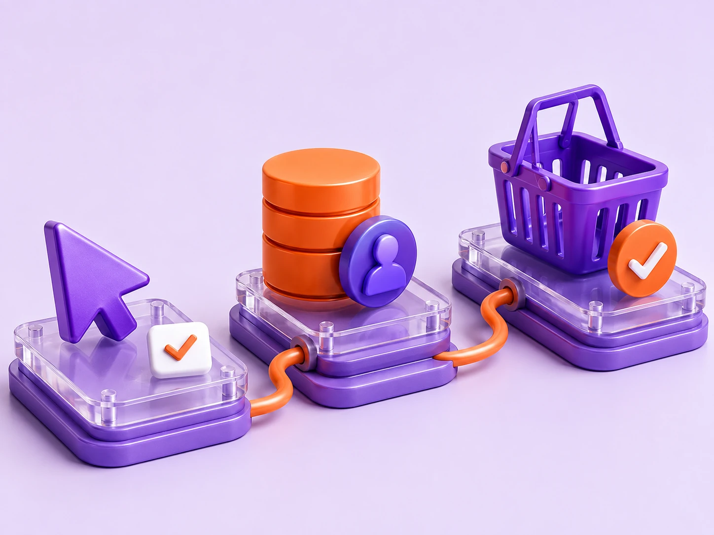

Event tracking
- Page view
- Add to cart
- Purchase
TRACKING & AUTOMATION
Accurate tracking, connected data and automated insights for clearer Google Ads decisions.
Review my trackingQualified lead
Lead quality recorded.
Campaign → customer → sale
Illustrative signals · no live integrations shown
A complete tracking and automation setup so you see the full customer journey and can make smarter decisions with confidence.
Get accurate, deduplicated conversion data across your website and key user actions.
Track what matters →Connect your CRM to Google Ads and measure high-quality leads and offline sales.
Bring your data together →Understand which campaigns, keywords and audiences drive real revenue, not just clicks.
See the bigger picture →FROM ACTION TO BUSINESS CONTEXT
A website action only tells part of the story. Connect it to the information your business uses to recognise a valuable customer.

Example mappings to agree before implementation.
Connect your ad performance to real business outcomes — and use the insights to improve what happens next.
Campaign visit
Enquiry captured
Opportunity qualified
Revenue recorded
Automate the checks, catch issues early and spend more time on what drives growth.
Get clear, scheduled reports on the metrics that matter.
Keep an eye on spend, pacing and unusual changes. Budget changes follow agreed controls.
Get notified when something needs your attention.
Import CRM outcomes to see which campaigns drive the best leads.
Monitor your product feed for errors, disapprovals and gaps.
Use AI to surface insights, reviewed by our specialists for real-world context.
A CLEAR IMPLEMENTATION PATH
A tracking project needs a clear scope, careful testing and a handover your team can use. We agree the systems, access and responsibilities before work starts.
Review the website, existing tags, key journeys and the systems your team uses. Agree which actions matter and which questions the setup needs to answer.
What you getEvent map & measurement scope
Configure the agreed events and integrations. Review identifiers, event parameters and consent settings with the people responsible for the website and data.
What you getConfigured events & integration mapping
Check expected events, duplicate submissions, missing information and the route from the website to the destination system. Record what works and any remaining limitations.
What you getValidation log & open issues
Explain what is measured, where the information goes and how the setup should be maintained when forms, products or business processes change.
What you getSetup notes & ownership checklist
Documentation covers the agreed events, destinations, validation findings and who owns future updates. The scope depends on your platforms and available access.
We set up a solid tracking foundation, so you can trust your data and move forward with confidence.
Illustrative review checklist
DIFFERENT BUSINESSES, USEFUL SIGNALS
The same event list will not fit every business. Here are three examples of how the measurement plan can change with the customer journey.
Ecommerce
See which purchase signals reach your campaign tools and how they relate to your commerce records.
Lead generation
A submitted form and a qualified opportunity are different stages. Define both and agree how feedback moves between the teams.
SaaS & subscriptions
Follow the meaningful stages between acquisition and a customer using or paying for the product.
These are planning examples. We confirm the event definitions, integrations and reporting limitations for your actual setup.
Review my trackingStill have questions?
Email our team and we’ll be happy to help.
We first review your CRM, available data and integration options.
We can include measurement planning, implementation and validation in the agreed scope.
We define the scope after reviewing your website, platforms and data requirements.
Let’s review your current tracking and identify new opportunities to improve your Google Ads.
Could not load site configuration. Please reload or contact us by email.